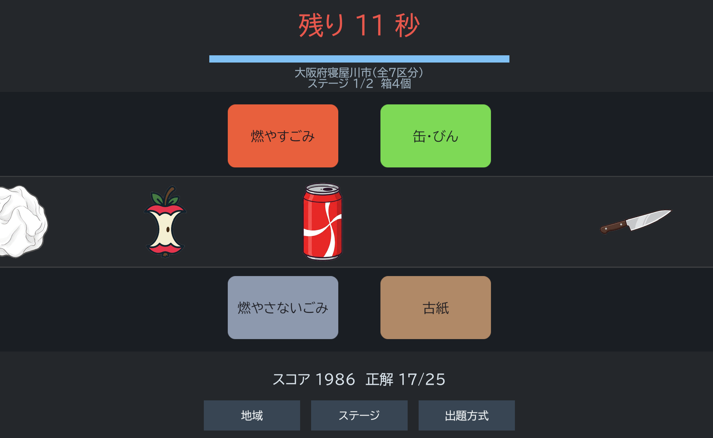
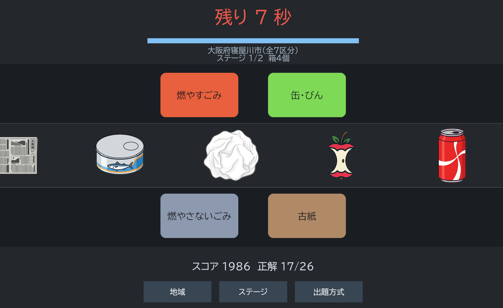
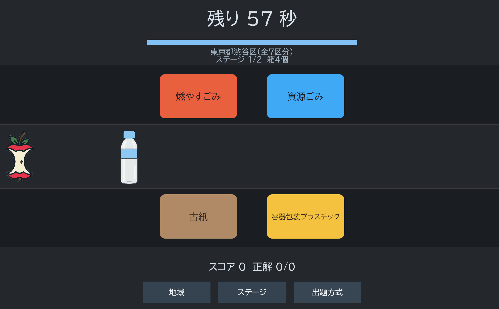
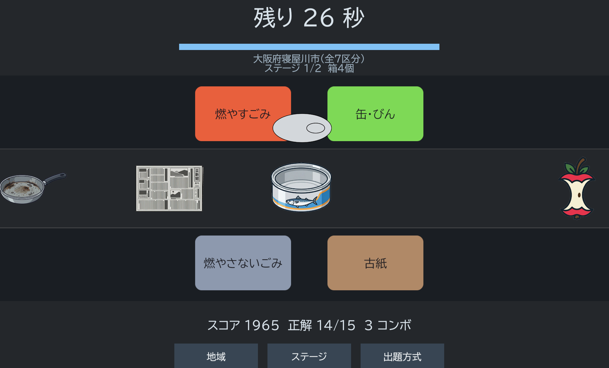

高専2年生 (17歳) / Iコース(知能情報コース)
所属: 高専2年生 (17歳)
専攻: Iコース(知能情報コース)
プログラミングとものづくりを中心に学習を進めています。主にPythonを用いた小規模ツールの開発や、C#/Unityを用いた2Dゲーム開発、各種マイコン制御の実験などに取り組んでいます。
ゴミ分別のゲームです。自治体と難易度を選択するとチュートリアルが始まります。
ゲームが始まると画面左からゴミが流れてくるので、それを正しく分別することでスコアを伸ばします。
ゴミによっては捨てる前に分解する必要があります。(例：ペットボトルのキャップと蓋を外す、空き缶のふたを外すなど)
ゲーム性を持たせるためにスコアにはコンボ要素がある点やスコアに応じてランクが表示され、次のランクまであと〇点か出てくる点,
ゲーム終了後「もう一度」ボタンを押すことですぐにリトライできるようにしてプレイヤーがリトライするまでを短くした点が特徴です。
私はこのゲームのデザイン面の担当をしました。ゴミのデザインに関してはAIを活用して作成したのですがこだわった点があり、
全体として統一された絵柄かつ、パッと見るだけでそれが何のゴミかを把握できるようなデザインにこだわりました。
また、分解できるゴミはレイヤー分けすることで、ゲーム内で分解したときにアニメーションをつけることができるようにしました。




| 言語 | 経験レベル・具体的内容 |
|---|---|
| Python | 学校授業・課題での基礎習得。データ処理スクリプト、CLIツールの作成、Google Colab上の開発経験あり。 |
| Arduino (C/C++) | 学校授業レベル。センサー取得やLED/モータ制御など基本的なハードウェア制御の実装が可能。 |
| Scratch | 授業でのアルゴリズム基礎理解に使用。ブロック組みによる処理フローの視覚化・理解。 |
| C# | Unityを用いた2Dゲーム開発にて、ゲームロジック・アセット読み込みスクリプト等の実装経験あり。 |
| HTML / CSS | 本ポートフォリオ制作をはじめとする基本的なWebページのレイアウト・スタイリング構造の構築。 |
| Java | 趣味で更新している小規模なサイト作成に使用。 |
| ツール / 環境 | 活用内容 |
|---|---|
| Git / GitHub | リポジトリの作成、コミット、プッシュ、GitHub Pagesを用いた静的サイトの公開作業。 |
| VS Code / venv | Python等のコード記述および仮想環境（venv）の構築・パッケージ管理環境での開発。 |
| WSL | Windows上でのLinux（Ubuntu等）環境を用いたコマンドライン操作・開発環境構築。 |
| Arduino IDE / Tinkercad | 回路シミュレーション（Tinkercad）および実機マイコンへのプログラム書き込み・デバッグ。 |
| Deeds-DCS | 論理回路の設計・動作検証・デジタル回路シミュレーション演習。 |
| MakeCode for micro:bit | micro:bitを用いたフィジカルコンピューティング演習およびブロックプログラミング。 |
| Ambient / Real VNC | [利用経験に応じて記述：IoTデータの可視化 / リモートデスクトップ接続による実験環境操作] |
| Unity | 2Dゲーム開発におけるゲームロジック・アセット読み込みスクリプト等の実装経験あり。 |